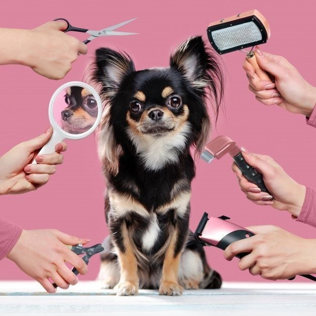
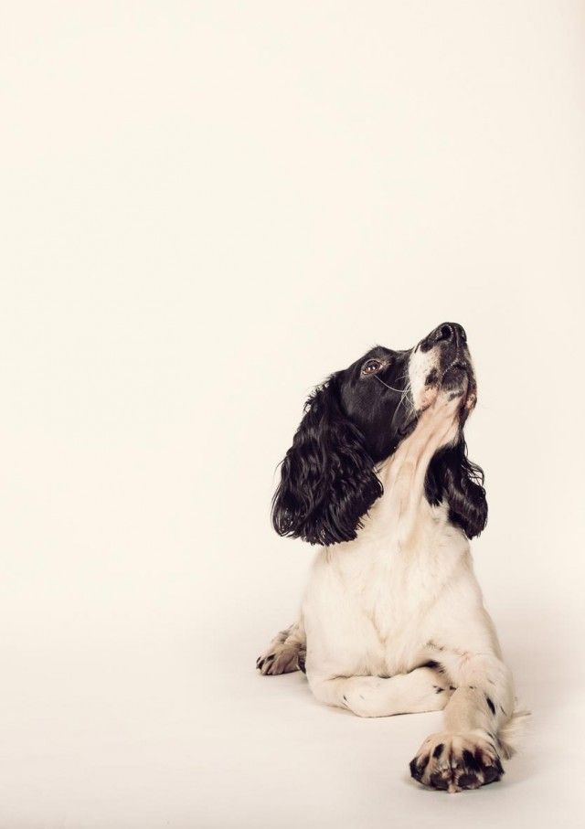
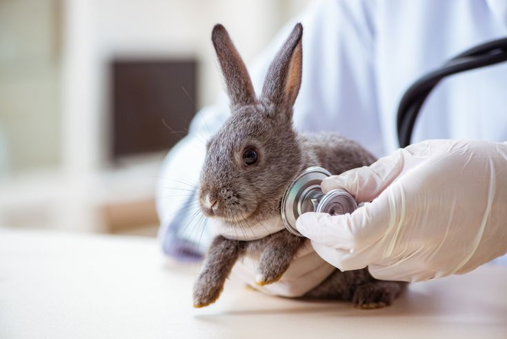

Home
Let's see what we can do!

Daycare

Grooming

Photography

Veterinary Services
Palu
Pet Care Center
Selamat datang di Palu Pet Care Center, pusat layanan terpercaya untuk kesehatan dan kebahagiaan hewan peliharaan Anda di kota Palu! Kami menghadirkan berbagai layanan unggulan, mulai dari perawatan kesehatan, grooming, vaksinasi, hingga konsultasi dokter hewan berpengalaman. Dengan fasilitas modern dan tim profesional, kami berkomitmen untuk memberikan pelayanan terbaik agar sahabat kecil Anda merasa nyaman dan terawat.
Kunjungi kami untuk pengalaman pet care yang ramah dan penuh perhatian! ❤️
Pet Care Center